地政学
ヌクアロファは、南太平洋で独自の王制を保つトンガの政治窓口です。小さな首都に王宮、議会、官庁、港、外交が集まり、海洋権益、災害支援、移民労働、援助、地域安全保障を扱う実務の場です。海の距離も近いです。
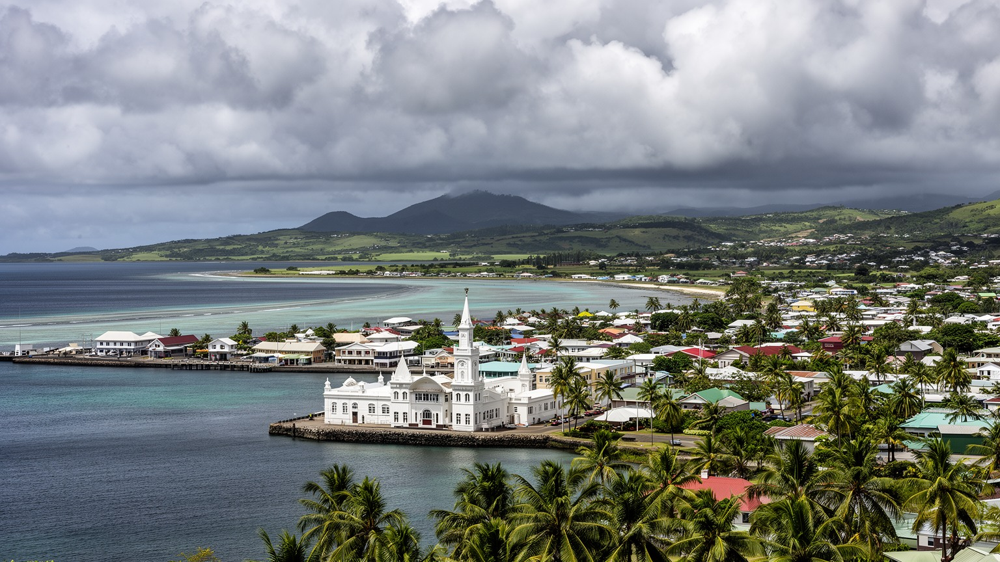
🇹🇴 トンガ / トンガタプ島 / World City Atlas
トンガタプ島北岸の港に開く王国の首都です。王宮、議会、教会、市場、港、海外送金で支えられる家計、日曜に静まる街路、火山噴火と津波の記憶が重なるポリネシアの政治・文化都市です。
都市の骨格
ヌクアロファは巨大な都心ではなく、王国の政治、港湾、教会、学校、市場、家族のネットワークが短い距離で重なる首都です。海外で働く親族の送金、日曜の静けさ、低地の災害リスクが、街のリズムを決めています。
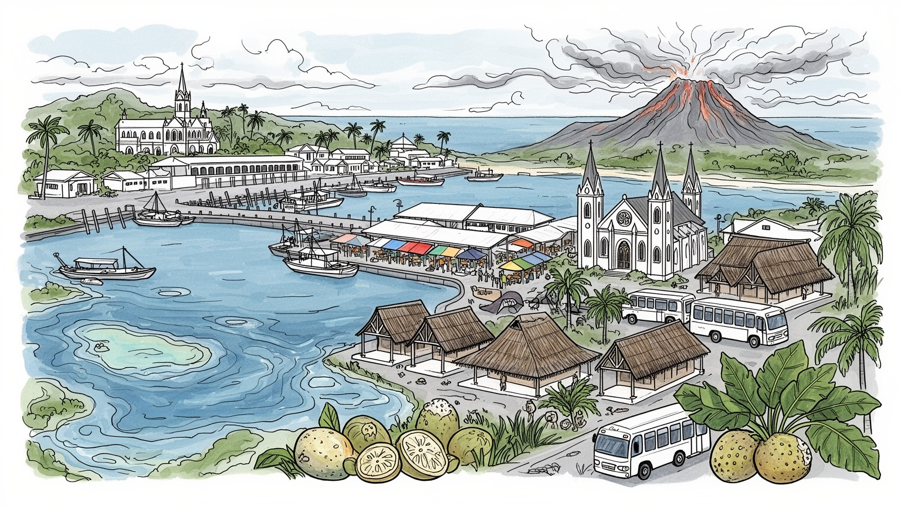
ヌクアロファは、南太平洋で独自の王制を保つトンガの政治窓口です。小さな首都に王宮、議会、官庁、港、外交が集まり、海洋権益、災害支援、移民労働、援助、地域安全保障を扱う実務の場です。海の距離も近いです。
雇用は行政、港湾、小売、建設、教育、医療、観光に支えられます。国内市場は小さく、家計には海外で働く親族の送金や季節労働が深く入り、街の店、住宅、学費、教会行事にも影響します。日々の選択肢も限られます。
教会、王室儀礼、カヴァ、タパ布、合唱、ラグビー、親族の義務が都市生活を編みます。日曜には商業が静まり、礼拝と家族の時間が街を支配するため、観光客にも社会の規範が見える首都です。今も街の大きな芯です。
旅行者は王宮外観、市場、港、教会、近郊の潮吹き穴や海岸を巡ります。住民は物価、雇用、住宅、高潮、サイクロン、噴火後の復旧、離島交通と向き合い、穏やかな街並みの裏に課題を抱えています。海も近い街です。
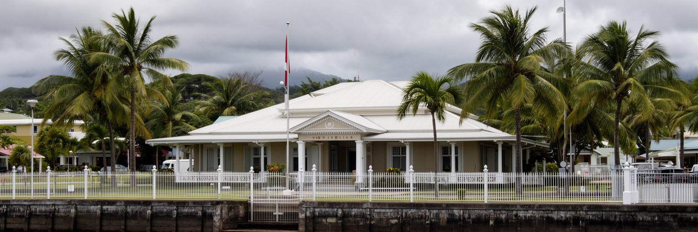
ヌクアロファを他の太平洋首都と分ける最大の特徴は、トンガ王国の王宮と国家制度が、港に近い低い海岸の街並みの中に置かれていることです。白い王宮、議会、官庁、裁判、外交窓口は、巨大な行政地区として隔離されるよりも、教会、市場、商店、学校、住宅と近い距離で並びます。トンガは南太平洋で独自の王制を保ち、植民地支配を受けた近隣諸国とは異なる政治記憶を持ちます。とはいえ首都の政治は伝統だけで動くわけではありません。憲法、選挙、貴族制度、教会、海外居住者、援助機関、災害対応が複雑に交わり、国民の生活に影響します。ヌクアロファの王宮は観光写真の対象である前に、土地、儀礼、権威、近代国家を結びつける象徴です。王室行事や国家式典は街の交通と時間を変え、教会の暦や親族行事とも響き合います。小さな首都では政治の距離が近く、官庁へ行く人、港で働く人、礼拝へ向かう家族が同じ道路を使います。首都を読むには、王政を古い制度として眺めるだけでなく、民主化の議論、公共サービス、若者の雇用、災害復興、海外送金がどのように国家の判断へ結びつくかを見る必要があります。ヌクアロファの政治性は、豪華な建物の数ではなく、王国の継続と現代の行政課題が同じ海辺の街路に重なる点にあります。王宮の静けさの背後には、国家を日々運営する実務があります。その近さが首都の緊張も生みます。
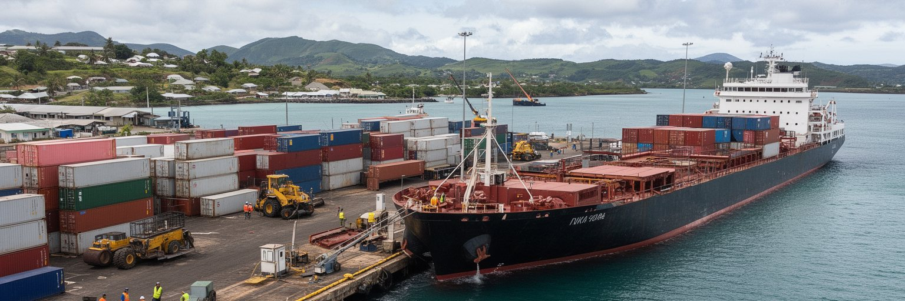
ヌクアロファ港は、トンガの輸入、離島連絡、農産物の出荷、燃料、建材、医薬品、日用品の流れを受け止める重要な入口です。トンガタプ島は国の人口と行政の多くを抱えるが、国家はババウ、ハアパイ、エウア、ニウアスなどの島々へ広がります。港には国際貨物船、国内フェリー、小型船、漁船、クルーズ船が出入りし、岸壁の動きは商店の棚、学校の教材、病院の薬、建設現場、離島の家族へつながります。輸入に依存する島国では、燃料価格、為替、船便の遅れ、サイクロン、港湾施設の被害が生活費に直結します。港湾労働は、荷役、通関、倉庫、運転、修理、警備、清掃、食堂、事務まで幅広く、観光の表に出にくい首都の雇用を作ります。ヌクアロファを港町として読む時、海は美しい背景ではなく、経済の脆さと接続性を同時に示す場所になります。港の効率が上がれば物価の安定に寄与し、船便が止まれば離島の生活は不安定になります。防波堤、岸壁、倉庫、道路、冷蔵設備、税関手続きは、地味ですが国の安全保障に近い意味を持ちます。港周辺の混雑や高潮対策も、都市計画の中心課題です。船から降りた貨物が、どの道路を通り、どの店に届き、どの家計を圧迫するかまで見て初めて、ヌクアロファの港が単なる施設ではなく、王国全体の生活回路であることが分かります。港の静かな朝は、広い海域を結ぶ一日の始まりでもあります。
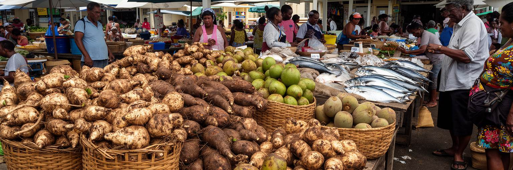
ヌクアロファの市場は、トンガタプ島の農村、沿岸の漁、離島からの産品、輸入品、手工芸、家族の現金収入が交わる場所です。タロ、ヤム、キャッサバ、パンノキ、ココナツ、バナナ、魚、貝、豚肉、葉野菜、花、タパ布や編み物が並び、買い物は単なる消費ではなく親族と地域の関係を確認する時間にもなります。トンガの食文化は、地元の根菜と海産物、日曜や儀礼の大きな食事、海外から届く食品、移住先から戻る嗜好が混ざっています。首都では現金経済が強まり、輸入米、小麦粉、缶詰、砂糖、飲料も日常に深く入る。市場の価格は天候、燃料費、船便、農作物の収穫、海外送金の入り方に左右され、家計の緊張をすぐ映します。売り手にとっては、早朝の仕入れ、日差し、雨、保存、廃棄、交通費、客との信用が毎日の条件です。観光客にとって市場は色彩豊かな場所に見えますが、住民にとっては栄養、収入、親族義務、儀礼準備、学校の昼食が結びつく実務の場です。食卓を読むことは、農村と首都の関係を読むことでもあります。トンガタプの畑が乾けば市場は変わり、港の輸入品が遅れれば家庭の献立も変わります。健康面では、保存しやすい輸入食品の増加が糖尿病や肥満の課題とも関係します。ヌクアロファの市場には、伝統を守る姿だけでなく、島国が現金と物流に依存しながら食を調整する現代性が現れています。買い物の声が、首都の生活感を毎朝作ります。
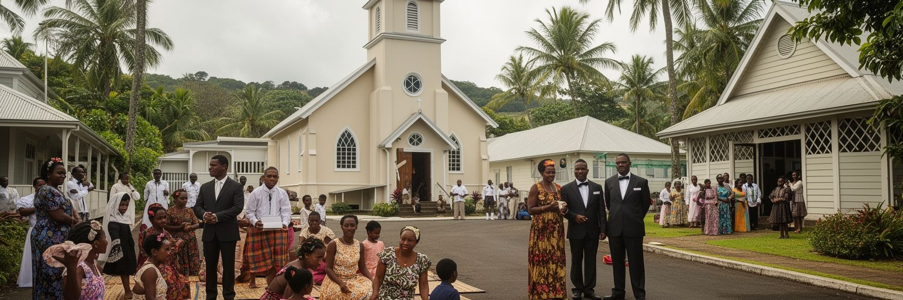
ヌクアロファの都市生活を理解するには、教会と日曜の重みを避けて通れません。メソジスト系を中心に多くの教派があり、礼拝、合唱、献金、青年会、女性会、結婚、葬儀、学校、福祉が日常の社会関係を支えます。日曜には商業活動が大きく制限され、街は平日とは違う静けさを帯びる。旅行者には不便に見えることもありますが、住民にとっては祈り、休息、家族、食事、親族訪問の時間であり、社会の規範を共有する日です。教会は信仰施設であるだけでなく、移住先へ出た家族との関係、送金、学費、病気、災害後の支援をつなぐ制度でもあります。合唱や礼服、タオバラ、カヴァの場は、都市に暮らしていても村や親族の秩序を思い出させる。もちろん、献金や行事の費用、共同体からの期待は家計や個人に負担をかけることもあります。若者や女性にとって、教会は居場所であると同時に規範の圧力を感じる場にもなります。それでもヌクアロファでは、教会が行政だけでは届きにくい支えを提供し、災害時や困窮時の助け合いを動かす力を持ちます。宗教を観光上の風景としてだけ見れば、都市の時間の組み立てを見落とします。日曜に閉まる店、静かな道路、礼拝後の食卓、親族の訪問は、首都が効率だけでなく共同体の規律によって運営されていることを示します。ヌクアロファの公共性は、祈りと家族の時間を都市の中心に置くところにあります。その静けさが、街の記憶を保っています。
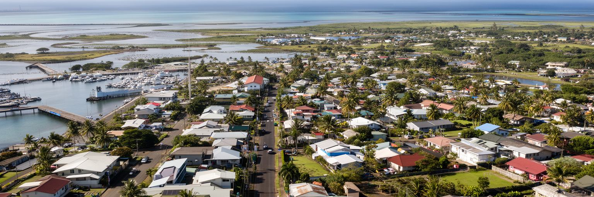
ヌクアロファはトンガタプ島北岸の低い海岸に広がり、外洋、港、珊瑚礁、ファンガウタ礁湖に近い地形が都市の形を決めています。中心部は比較的平坦で、王宮、官庁、商店、市場、教会、学校、住宅が低層に広がります。高層の都心ではなく、広い空と海風の下に道路と敷地が伸びるため、一見するとゆったりした町に見えます。しかし低地であることは、排水、高潮、サイクロン、海岸侵食、湿地の埋立、道路の冠水という課題を伴う。礁湖は漁、景観、交通、生活の場である一方、都市排水やごみ、過剰利用の影響を受けやすいです。住宅地が拡大し、車が増え、商業施設が広がれば、雨水の流れと海辺の環境はさらに変わります。都市形態を読むには、建物の高さよりも、水の逃げ道、道路の高さ、海岸の護岸、空き地の使われ方、教会や学校までの歩行距離を見る必要があります。ヌクアロファでは、港に近い便利さと低地のリスクが同じ場所にあります。高潮や強い雨の後にどの道が使えるか、排水溝が詰まるか、住宅の床がどれだけ高いかは、生活の安心を左右します。気候変動の時代には、都市の形そのものが適応策になります。水辺を観光の景観として整えるだけでなく、住民が安全に暮らし、市場や学校や病院へ行けるようにすることが重要です。ヌクアロファの穏やかな海岸線は、都市計画の難しさを静かに示しています。水際の余白も都市を守ります。
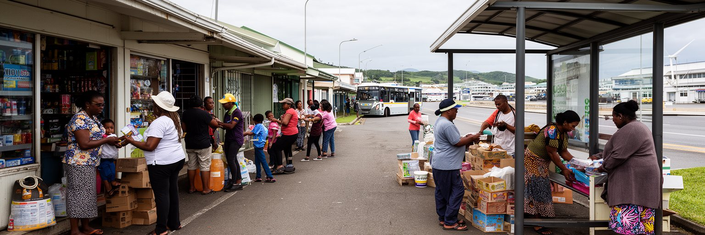
ヌクアロファの経済を数字だけで見ると小さく見えますが、実際の家計は国内の仕事と海外の親族の送金が組み合わさって成り立っています。トンガ人はニュージーランド、オーストラリア、米国などへ移住し、季節労働や長期就労を通じて家族を支えます。送金は学費、住宅、教会献金、葬儀、結婚、医療、店の仕入れ、車、建材、家電に使われ、首都の消費と建設にも影響します。国内では行政、港湾、小売、教育、医療、建設、観光、運輸が雇用を作りますが、若者全員を十分に吸収できるほど市場は大きくありません。海外で働く選択は希望である一方、家族の分離、介護、子育て、技能流出、送金への依存も生みます。街の商店やバス停、空港へ向かう道には、外で働く人と残る家族の関係が見え隠れします。ヌクアロファの労働を読むには、職場の数だけでなく、親族の義務と国際移動を含めて考える必要があります。海外から届く現金は家計を安定させるが、物価上昇や災害復旧の費用が増えればすぐ吸収されます。季節労働者の不在は、村や家庭の労働分担にも影響します。送金がある家とない家の差は、教育機会や住宅改善にも現れます。首都の経済政策は、港や観光だけでなく、若者の技能訓練、帰国者の経験、女性の仕事、地域の小規模事業を支える必要があります。ヌクアロファの家計は、島の中だけで完結せず、太平洋を越える家族の移動で動いています。その結び目が首都に集まります。
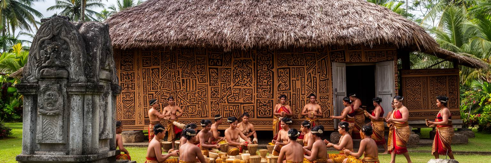
ヌクアロファの文化は、王室儀礼、教会、親族、カヴァ、タパ布、踊り、合唱、ラグビー、学校、海外移住者の帰郷が重なって作られます。首都には王宮や王陵に関わる記憶があり、国家行事や葬儀、戴冠、祝祭は都市の空間を特別な場へ変えます。一方で文化は式典だけにあるのではありません。家庭で編まれる敷物、タパ布を準備する女性たち、カヴァの輪、教会の合唱、ラグビーの応援、結婚式や葬儀の食事、海外から戻った親族へのもてなしが、日常の中でトンガらしさを再生産します。首都化と海外移住が進んでも、村や島の系譜、身分関係、親族の義務は人々の行動を形づくります。文化は誇りであると同時に、費用と時間を要する社会的責任でもあります。大きな儀礼の準備は家計を圧迫することがあり、若い世代は伝統を尊重しながらも、教育、仕事、海外生活との折り合いを探します。ヌクアロファを文化都市として読むには、舞台上の踊りだけでなく、準備する手、食材を運ぶ車、教会で練習する声、親族からの依頼を見る必要があります。観光客が文化に触れる時には、演出された場と生活の場を混同せず、儀礼の重みを尊重することが大切です。首都の文化は保存された過去ではなく、移民送金、学校教育、メディア、スポーツ、王室行事の中で変化し続けます。ヌクアロファの街路には、国家の象徴と家庭の義務が同時に息づいています。その重なりが、都市の品格を作ります。
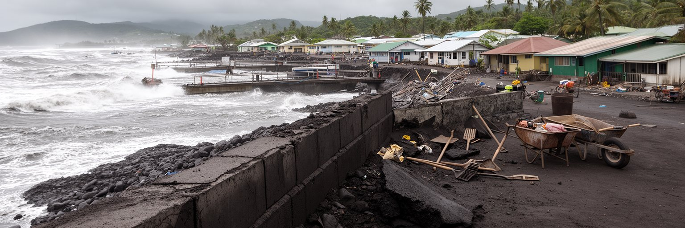
ヌクアロファの近年の記憶を語る上で、2022年のフンガ・トンガ＝フンガ・ハアパイ火山噴火と津波は欠かせません。大規模噴火は火山灰、津波、通信断、港湾被害、水の汚染、住宅の損傷をもたらし、首都と離島の脆弱性を世界に示しました。火山は観光的な自然の驚異ではなく、海底地形、気象、通信ケーブル、港、空港、飲料水、国際支援を一度に揺さぶる力を持ちます。ヌクアロファでは灰の除去、給水、道路清掃、港の復旧、家屋の修理、心理的な不安への対応が必要になり、教会や親族、海外トンガ人、援助機関が支援に関わりました。災害は国家機能が首都に集中することのリスクも明らかにしました。通信が切れれば離島の状況が分からず、港が傷めば物資の流れが滞ります。復興を読む時には、被害の大きさだけでなく、誰が水を運び、誰が屋根を直し、誰が送金し、どの地区が遅れて支援を受けたかを見る必要があります。噴火と津波の経験は、気候変動とは別の自然災害でありながら、低地の都市が多重リスクに向き合う現実を教えています。ヌクアロファの防災は、サイクロン、高潮、津波、火山灰、通信、避難路をまとめて考える段階にあります。海辺の穏やかな街は、一瞬で国際的な救援の焦点になる可能性を持ちます。記憶を残すことは恐怖を煽るためではなく、次の災害で水、情報、避難、港湾機能を守るための準備です。復旧の経験は、都市の強さを測る物差しでもあります。
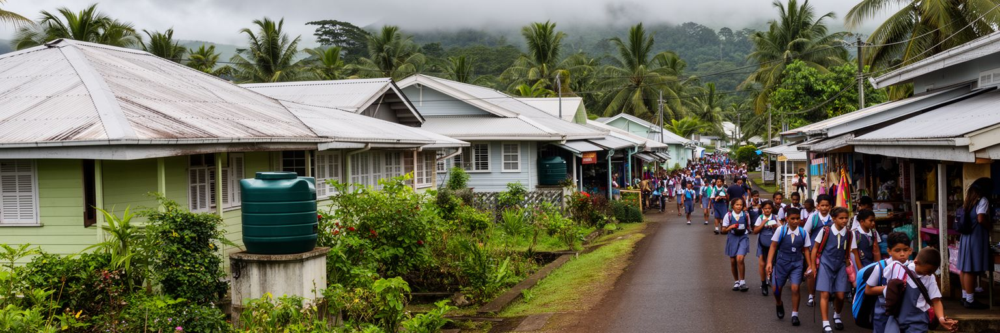
ヌクアロファの日常は、低層の住宅、庭、教会、学校、小店、バス、車、親族の訪問で組み立てられます。中心部に近い便利な場所ほど土地と住宅の需要は強く、周辺の集落や郊外へ生活圏が広がります。家族は同じ敷地や近い地区で助け合い、子どもの世話、高齢者の介護、教会行事、葬儀、海外へ出た親族との連絡を分担します。住まいは個人の空間であると同時に、親族の責任を果たす場所でもあります。都市化が進むと、家賃、建材費、交通費、若者の独立、女性の家事負担、学校への距離、災害に強い住宅の確保が課題になります。水タンク、排水、屋根の強さ、道路の冠水、電力と通信の安定は、日々の安心に直結します。観光客には穏やかな住宅地に見えても、住民は物価上昇、送金の不安定さ、雇用の少なさ、教会や親族行事の費用と向き合っています。ヌクアロファの暮らしを読むには、王宮や港だけでなく、朝の通学、店先の会話、庭の作物、日曜の料理、雨の日の移動を重ねる必要があります。家族の支え合いは強いが、それに頼りすぎると困窮が見えにくくなります。公共交通、保健、住宅支援、排水、青少年の居場所は、首都の生活の質を底上げする現実的な施策です。小さな街だからこそ、住民同士の距離は近く、評判や義務も強いです。日常生活の細部に、トンガ社会の温かさと負担の両方が表れています。家の周りの整備が、暮らしの尊厳を守ります。
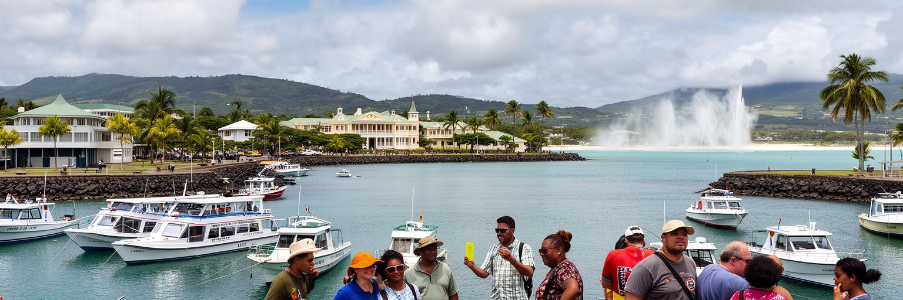
ヌクアロファの観光は、巨大なリゾート都市の消費ではなく、王宮外観、教会、市場、港、海岸、近郊の潮吹き穴、ラグーン、タパ布や編み物、カヴァの文化を通じてトンガの社会を知る旅に近いです。旅行者は首都を拠点にトンガタプ島を巡り、離島への船や飛行機の入口としても利用します。街の魅力は、短い距離の中に王政、信仰、港湾、家族の生活、海外移住の痕跡が見えることにあります。日曜には店や活動が大きく制限されるため、旅程は地域の規範を尊重して組む必要があります。写真を撮る時には、王室関連施設、教会、墓地、礼拝、家族行事への配慮が欠かせません。観光が地域に利益をもたらすには、地元ガイド、小規模宿泊、食堂、市場、手工芸、島内交通へ支出が届く形が望ましい。ヌクアロファは華やかな夜景で競う都市ではありませんが、朝の市場、港の船、礼拝へ向かう人々、海岸の風、王宮前の静けさが、ポリネシアの王国首都を実感させます。観光開発では、歩道、案内、トイレ、廃棄物、海岸管理、文化施設の維持、災害時の情報提供が重要になります。旅行者が単に南国の背景として街を見るのではなく、移民送金、教会、王政、災害復興を含む社会として理解できれば、滞在の意味は深くなります。ヌクアロファは、トンガを急いで通過する入口ではなく、王国の現在を読む最初の教室です。静かな街歩きが、島の制度と生活を近づけます。
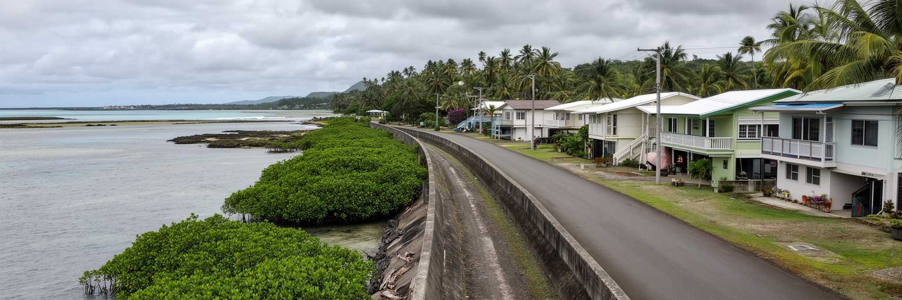
ヌクアロファは、気候変動と災害リスクを日常の都市運営として考えなければならない首都です。低い海岸、礁湖、港、平坦な道路、住宅地は、高潮、海面上昇、サイクロン、強雨、海岸侵食、排水不良の影響を受けやすいです。気候リスクは将来の抽象的な問題ではなく、港の機能、学校への通学、教会行事、病院への移動、市場の営業、住宅の修理費として現れます。護岸や道路のかさ上げだけでなく、排水路の維持、海岸植生、土地利用、住宅の強化、早期警戒、避難計画、通信の冗長性が必要になります。小さな島国では公共投資の余力が限られ、援助資金や国際気候 finance へのアクセスも都市の将来を左右します。ですが適応は大型事業だけでは進みません。住民がごみで水路をふさがない仕組み、地区ごとの避難訓練、高齢者や障害のある人への支援、学校での防災教育が、被害を小さくします。ヌクアロファでは、海岸を守ることが観光景観を整えることではなく、国家の行政、港湾、家族の生活を守ることに直結します。気候適応が不公平な再開発になれば、低所得世帯や海辺の住民が負担を押しつけられます。だからこそ、どの地区を優先し、誰が移転や修理の費用を負うのかを透明に考える必要があります。海と共に暮らしてきた都市は、海を遠ざけるだけでは生きられません。水の流れを読み、危険を減らし、暮らしを続けるための細かな管理が、首都の未来を支えます。適応は毎日の清掃と計画から始まります。

ヌクアロファは、人口規模では小さいが、南太平洋の地域外交と安全保障の中で独自の意味を持ちます。トンガは広い海域、漁業資源、海底通信、災害対応、移民労働、気候交渉、警察・軍事協力をめぐって、近隣諸国やニュージーランド、オーストラリア、中国、日本、米国、国際機関と関係を結びます。首都の官庁や港、空港、会議室では、援助事業、インフラ整備、海洋監視、保健、教育、通信、災害復旧の調整が行われます。大国間競争の地図では小さな点に見える都市でも、港の改修や通信ケーブル、警備協力、債務、観光回復は住民の生活に直接関わります。ヌクアロファの外交は、首脳の声明だけでなく、書類を整える公務員、通訳、技術者、港湾職員、地域団体、教会、海外トンガ人の支援によって支えられます。海洋国家としての課題は、島の陸地よりはるかに広い。違法漁業の監視、災害時の物資輸送、気候資金の獲得、海外労働者の権利保護は、首都の行政能力を試す。ヌクアロファを地政学的に読むには、王宮や港の風景の背後にある交渉の網を見なければなりません。援助は便利な資金である一方、優先順位や依存をめぐる緊張も生みます。小さな首都が自国の声を保つには、統計、法制度、人材、地域連携が必要です。広い海を持つ国の主権は、儀礼だけでなく、日々の交渉と管理で守られています。ヌクアロファはその交渉の机です。
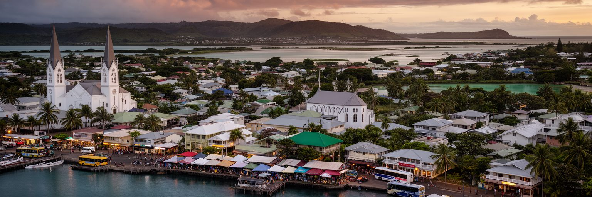
ヌクアロファは、巨大な経済規模で世界を動かす都市ではありません。しかし、南太平洋の都市を読む上では重要な手がかりを多く持ちます。王宮と議会はトンガ独自の国家制度を示し、港は輸入と離島連絡を支え、市場は農村と海と現金経済を結び、教会は日曜の時間と共同体の支えを作ります。海外で働く親族の送金は家計と都市消費を動かし、火山噴火と津波の記憶は、首都が多重災害に向き合う現実を教えます。低い海岸と礁湖は、気候適応と排水、住宅、港湾計画を日々の課題にします。ヌクアロファを穏やかな小都市としてだけ見ると、この重なりを見落とします。街の静けさの中には、王政、信仰、親族義務、海外移民、援助、物価、災害復興、地域外交が詰まっています。読むべきものは、王宮の白い外観、港のコンテナ、市場の根菜、礼拝へ向かう服装、送金で建てられた家、灰を掃いた記憶、海岸の護岸です。それらを同じ地図に置くと、ヌクアロファは小さな首都でありながら、海洋国家が二十一世紀に直面する課題を凝縮した場所として見えてきます。観光で訪れる人も、王国の美しさだけでなく、暮らしを支える制度と労働を見れば、街の奥行きに気づきます。トンガの首都を読むことは、太平洋の島々が世界経済、気候危機、移動、伝統をどう調整しているかを読むことでもあります。小さな港町の観察が、広い海の未来を考える入口になります。